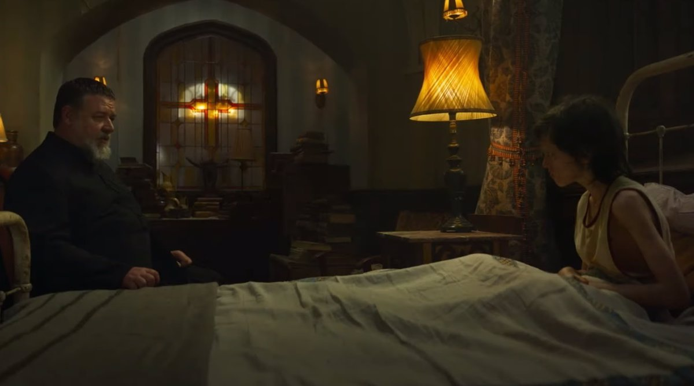
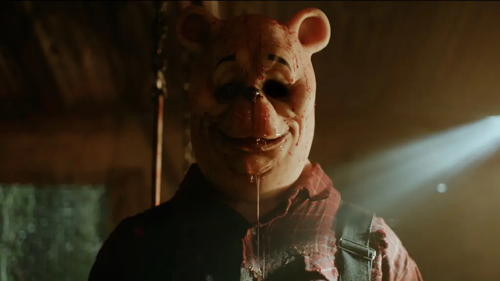
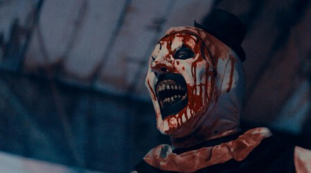

El Exorcista del Papa: Vaticano arremete contra la película protagonizada por Russell Crowe

Así llega el turno de la más reciente película de Russell Crowe, basada en los archivos reales del padre Gabriele Amorth, interpretado por Crowe, quien fue el jefe exorcista del Vaticano. La trama sigue la historia del padre Amorth, interpretado por, mientras investiga la misteriosa posesión de un niño. Perseguido por una conspiración de siglos, sus métodos poco convencionales de exorcismo lo enfrentarán al clero oficial del Vaticano, llevándolo a un dramático enfrentamiento tanto espiritual como religioso.
Pero estos conflictos con el clero han traspasado la ficción, pues en un comunicado oficial emitido el mes pasado la Asociación Internacional de Exorcistas se posicionó totalmente en contra de esta película. Partiendo de calificar al título de la misma como "pretencioso", también afirma que la historia pretende cosechar audiencia gracias una trama conspirativa que busca emular lo conseguido por El Código Da Vinci al intentar poner entre dicho quién es el verdadero enemigo del mundo, si el diablo o poder eclesiástico. La asociación señaló en su comunicado su rechazo a las prácticas mostradas en la cinta (vía The Guardian):
"El resultado final es inculcar la convicción de que el exorcismo es un fenómeno anormal, monstruoso y aterrador, cuyo único protagonista es el demonio, cuyas reacciones violentas pueden ser enfrentadas con gran dificultad… Esto es exactamente lo contrario de lo que ocurre en el contexto del exorcismo celebrado en la iglesia católica en obediencia a las directivas impartidas por ella".
Mientras lo que el público realmente se preguntaba era qué hace Russell Crowe en una película de este tipo, al ser poseedor de una exitosa carrera en la industria del cine con cintas como Gladiador, Una Mente Brillante y Los Miserables, la respuesta a esta pregunta puede encontrarse en el trasfondo de la misma historia que pretende reflejar la película de Sony Pictures dirigida por Julius Avery, que se basa libremente en la vida del legendario exorcista italiano.
Winnie the Pooh: Miel y Sangre

Una intrigante secuencia animada nos cuenta la historia de Christopher Robin y sus amigos animales del bosque de los 100 acres. Durante muchos años fueron felices, pero cuando el joven creció y se marchó a la universidad, Winnie Pooh, Piglet y los demás tuvieron problemas para subsistir por cuenta propia y se vieron obligados a hacer lo inimaginable. Cinco años después, cuando el joven regresó, descubrió con horror que sus amigos no eran como los recordaba.
Tristemente, esa secuencia inicial es lo único que vale la pena. Vamos a decirlo de una vez para que no pierdan más el tiempo: Winnie The Pooh: Miel y sangre es una pésima película de terror. Esto no tiene nada que ver con su nivel de producción. Hemos visto películas de terror hechas con menos presupuesto que resultan mucho más atractivas.
Si tenemos que decir algo bueno de Winnie The Pooh: Miel y sangre en esta reseña, es que algunas tomas de esta película de terror lucen bastante bien. Hay secuencia que aprovechan la exagerada iluminación para encuadrar a los asesinos como siluetas muy amenazantes y otras que usan las sombras para que luzcan realmente aterradores, pero eso es todo. La mayor parte del tiempo tenemos una película demasiado oscura con acción confusa. Tampoco nos perdemos de mucho, ya que la mayoría de eventos ocurren en una casa aburrida y en una especie de bodega industrial sin personalidad. La música no ayuda mucho a la ambientación y hay momentos en que simplemente desaparece.
Como dijimos en un comienzo, el concepto tenía potencial. De hecho, hubiera funcionado mucho mejor como cortometraje. Los primeros 15 minutos hubieran podido convertirse en una sensación viral de Internet si las cosas hubieran parado ahí en lugar de estirar la idea para convertirla en un película. De hecho, quieren estirarla aún más y convertirla en un universo cinematográfico con versiones aterradoras de Bambi y Peter Pan.
Terrifier 2: Es la película de terror más repugnante, sangrienta y divertida del año

El logro de alcanzar una recaudación de 10 millones de dólares es impresionante para una película con un presupuesto de solo 250.000. Hay una vuelta al espíritu Grindhouse que va más allá del uso de la violencia, y se añade el tono casi surrealista y la actuación maníaca de David Howard Thornton. Algo de eso había en la original, pero aquí el director Damien Leone ha tratado de cruzar otra línea roja con una secuela que expande el mundo del payaso duplicando su humor macabro para asimilarlo en un plantel en donde se podían ver nombres como Michael Myers, Jason Voorhees y Freddy Krueger.
La primera diferencia con la entrega anterior es que, pese a tener un aspecto convenientemente roñoso y baratuelo, no hay un look digital tan evidente, y además de filtros y texturas de cine de explotación hay un buen uso del color y la fotografía llena de grano, que convierte el aspecto amateur en una especie de continuadora de piezas de culto de vídeo que siempre han tenido su hueco en las estanterías de los fans. Esto ya es algo que marca la diferencia con las elegantes y matizadas direcciones de películas de horror actuales cargadas de drama como ‘Relic’ o ‘Nanny’.
En ese contraste podemos buscar parte de las raíces del fenómeno a modo de cierta reacción de los aficionados que pueden agradecer ese mimo estético aumentado en las nuevas propuestas de género, pero que echan en falta alguna película menos asimilada a códigos reconocibles y formalismos destinados a diluir el poder subversivo que siempre ha tenido el cine de terror. Por tanto, a cambio de valores de producción limitados, ‘Terrifier 2’ ofrece ese pellizco de desvergüenza que da la libertad de no tener a ejecutivos de estudio pidiendo rebajar el tono.
Y es que aquí el gore es obviamente el protagonista. Leone asume su vocación de director de orquesta de efectos especiales ideando muertes retorcidas con diferentes formas de masacrar los cuerpos realmente enfermizas. Estamos ante lo que sucede cuando se tiene plena libertad para plantear body horror, crueldad y tortura. Los rostros y los cuerpos son acuchillados, mutilados, profanados de diversas formas y reducidos a pulpa sanguinolenta. Los personajes son asesinados a tiros y las partes del cuerpo son arrancadas o cortadas con diversas armas. Hay una secuencia de pesadilla ultra sangrienta y bastante inquietante, y mucho, mucho más.